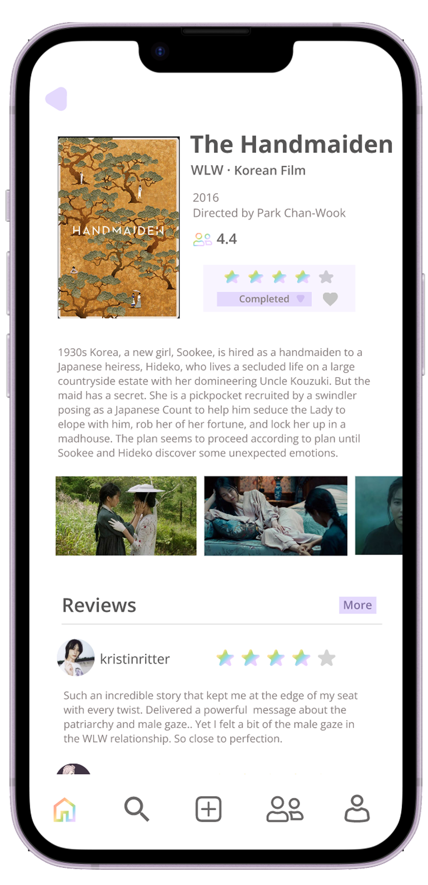
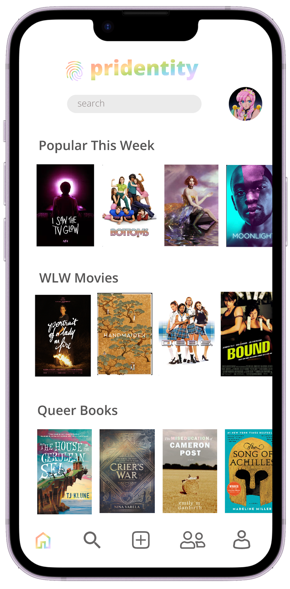
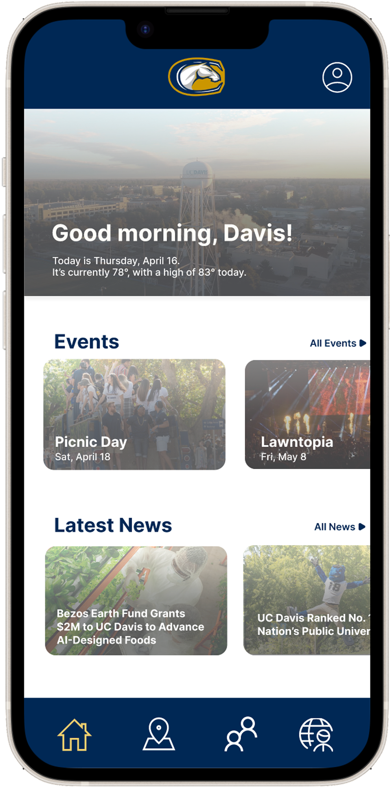
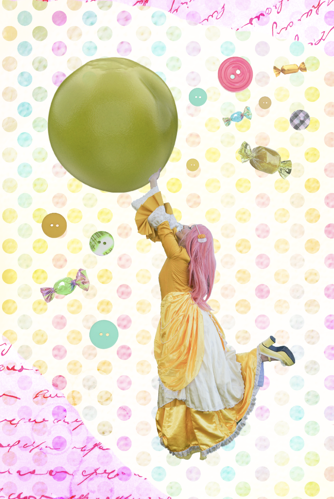
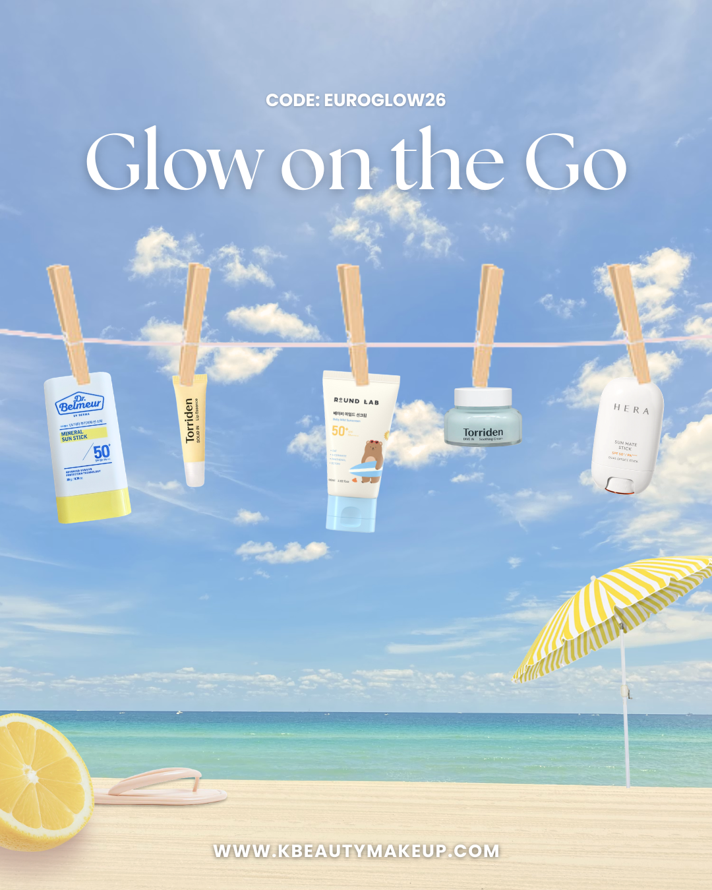

Hello, I'm
A multi-disciplinary designer studying at UC Davis with a focus on UI/UX Design and Motion Graphics.



Product design, user experience, and interaction
Animation, motion design, and visual storytelling


Editorial, branding, and visual communication